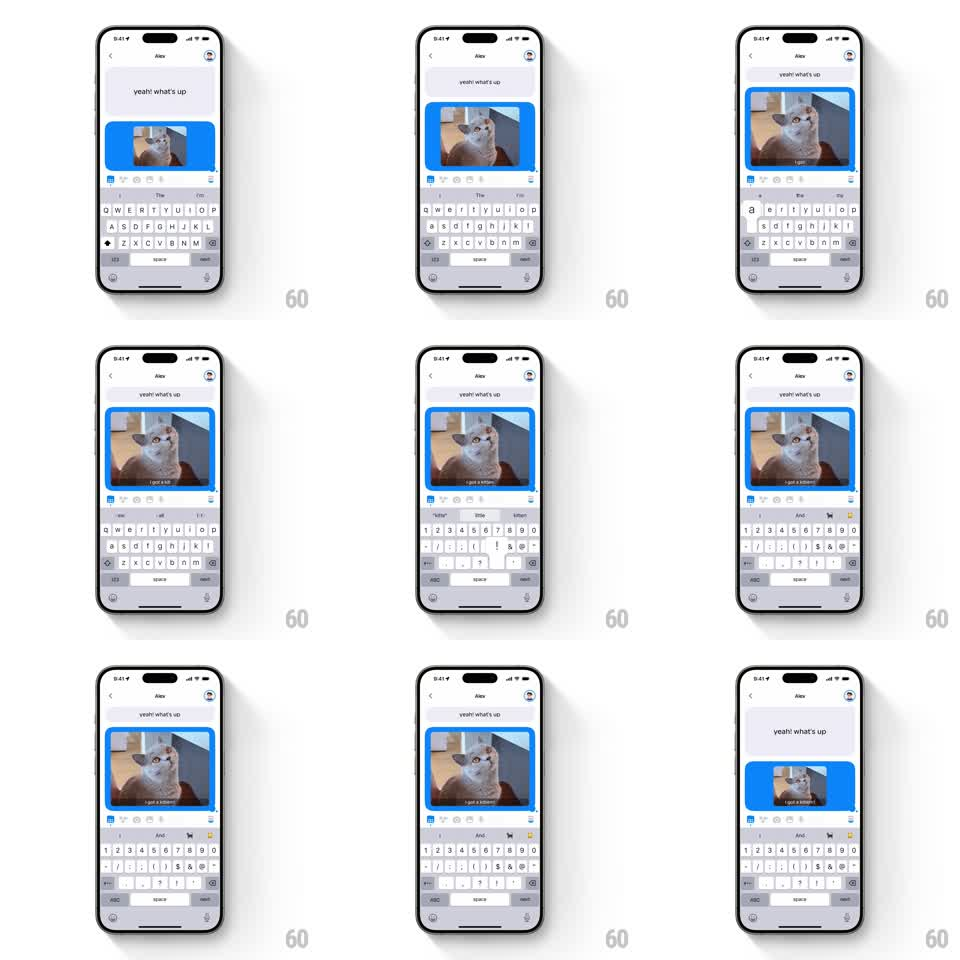

Media
Frame-by-frame

Rebuild this interaction 1:1: Honk's image caption scaling - typing a caption makes the shared image scale up inside its blue bubble to fill the width while the caption text overlays at its bottom, and clearing the caption scales the image back down.

Rebuild this interaction 1:1: Honk's image caption scaling - typing a caption makes the shared image scale up inside its blue bubble to fill the width while the caption text overlays at its bottom, and clearing the caption scales the image back down.
## Integration
Integration: stack-agnostic spec - springs given as stiffness/damping, timed motions as duration + curve; map every value to your framework and animation library of choice.
## Scene
Honk chat with Alex ("yeah! what's up" incoming), keyboard open. The user's blue bubble contains a photo (a cat). As the caption is typed ("i got a kitten!!"), the image grows from a small thumbnail to fill the bubble's full width, the caption rendering as white overlay text at the image's bottom.
## Motion spec
Pattern: caption-driven image scale with overlay text.
- First caption character: the image begins scaling up from thumbnail (about 35% width) toward full bubble width, progress tied to caption length (scale follows typing continuously, reaching full-bleed around 8+ characters).
- The bubble's bounds follow the image with Honk's resize spring (stiffness ~380, damping ~22) - the whole bubble visibly grows per keystroke.
- Caption text types character by character (~40ms each) at the image's bottom edge, white with a subtle dark scrim behind it (gradient 40% -> 0 over the caption zone) for legibility.
- Deleting characters reverses everything: image scales back down, scrim fades, bubble shrinks with the same spring.
- Corner radius of the image matches the bubble (16pt) throughout.
## Calibration
- Scaling is smooth and continuous - tie it to character count, not to steps.
- The scrim appears only when caption text exists.
## Reduced motion
Image snaps between thumbnail and full width (200ms ease); caption appears whole.
## Don't miss
- The caption lives on the image, not below it - overlay, not a second bubble.
- The incoming "yeah! what's up" message stays put above the whole time.